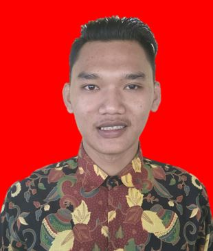

BIODATA PRIBADI

| NAMA |
: ARIF BUDIMAN |
| Tempat, Tanggal Lahir |
: Lebak, 09 Mei 1999 |
| Jenis Kelamin |
: Laki-laki |
| Agama |
: Islam |
| Tinggi Bandan |
: 173 |
| Berat Badan |
: 70 |
| Alamat |
: Kp. Cipancar Rt/Rw 001/002 Ds. Sangkanmanik Kec. Cimarga Kab. Lebak Banten |
| Hadphone |
: 085219746794 |
| Setatus |
: Belum Menikah |
| Email |
: sayangkamuh363@gmail.com |
DATA PENDIDIKAN
| No |
Tingkat Pendidikan |
Nama Sekolah |
Tahun Lulus |
| 1. |
SD/Mi |
MI Nurul Iman Cicendo |
2011 |
| 2. |
SMP/MTS |
SMPN 2 Cimarga |
2014 |
| 3. |
SMA/MA |
SMAN 1 Leuwidamar |
2017 |
| 4. |
Sekolah Tinggi |
STT Nurul Fikri |
Masih Kuliah Semester 1 |
DATA KEMAMPUAN
| Informasi teknologi |
: Bisa Office, Visual Basic Online, Servis komputer, Seting Jaringan Leb komputer |